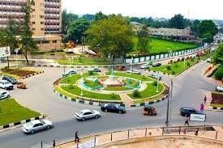

Chisomaga Chiwuikem Eke
About Me
My name is Chisomaga Chiwuikem Eke. I am from Imo State Nigeria. I work as Web programmer. I enjoy adventures and learning new things. I am currently learning programming with classes. My goal is to become AI Engineer.
Egbu, Owerri North

Egbu is a town in Owerri North Local Government Area of Imo State, Nigeria. It is known for its peaceful environment and strong cultural heritage. The Otammiri river begins in Egbu and the Bible was translated into Igbo in Egbu. Egbu is also known for agriculture and community development.
Read more at Wikipedia